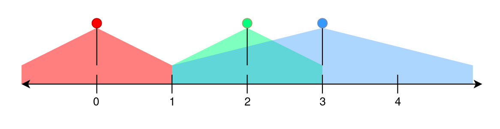

| Category | Difficulty | Likes | Dislikes |
|---|---|---|---|
| Algorithms | Medium | 89 | 6 |
google
You are given an integer n. A perfectly straight street is represented by a number line ranging from 0 to n - 1. You are given a 2D integer array lights representing the street lamp(s) on the street. Each lights[i] = [positioni, rangei] indicates that there is a street lamp at position positioni that lights up the area from [max(0, positioni - rangei), min(n - 1, positioni + rangei)] (inclusive).
The brightness of a position p is defined as the number of street lamps that light up the position p. You are given a 0-indexed integer array requirement of size n where requirement[i] is the minimum brightness of the ith position on the street.
Return the number of positions i on the street between 0 and n - 1 that have a brightness of at least requirement[i].
Example 1:

Input: n = 5, lights = [[0,1],[2,1],[3,2]], requirement = [0,2,1,4,1]
Output: 4
Explanation:
- The first street lamp lights up the area from [max(0, 0 - 1), min(n - 1, 0 + 1)] = [0, 1] (inclusive).
- The second street lamp lights up the area from [max(0, 2 - 1), min(n - 1, 2 + 1)] = [1, 3] (inclusive).
- The third street lamp lights up the area from [max(0, 3 - 2), min(n - 1, 3 + 2)] = [1, 4] (inclusive).
- Position 0 is covered by the first street lamp. It is covered by 1 street lamp which is greater than requirement[0].
- Position 1 is covered by the first, second, and third street lamps. It is covered by 3 street lamps which is greater than requirement[1].
- Position 2 is covered by the second and third street lamps. It is covered by 2 street lamps which is greater than requirement[2].
- Position 3 is covered by the second and third street lamps. It is covered by 2 street lamps which is less than requirement[3].
- Position 4 is covered by the third street lamp. It is covered by 1 street lamp which is equal to requirement[4].
Positions 0, 1, 2, and 4 meet the requirement so we return 4.Example 2:
Input: n = 1, lights = [[0,1]], requirement = [2]
Output: 0
Explanation:
- The first street lamp lights up the area from [max(0, 0 - 1), min(n - 1, 0 + 1)] = [0, 0] (inclusive).
- Position 0 is covered by the first street lamp. It is covered by 1 street lamp which is less than requirement[0].
- We return 0 because no position meets their brightness requirement.
Constraints:
1 <= n <= 1051 <= lights.length <= 1050 <= positioni < n0 <= rangei <= 105requirement.length == n0 <= requirement[i] <= 105